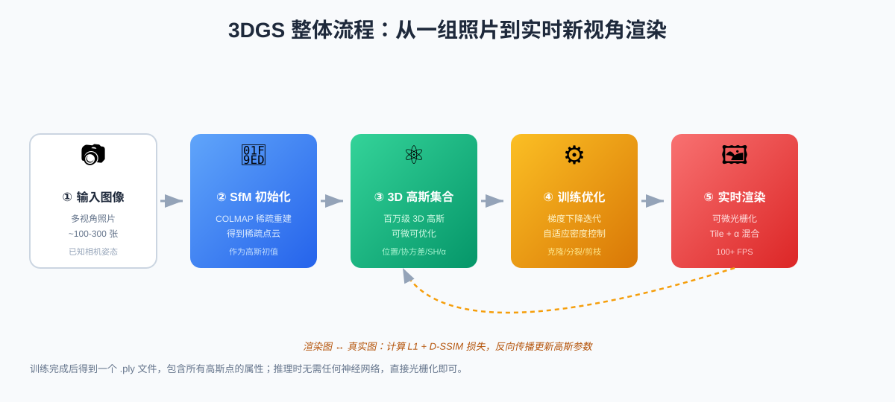
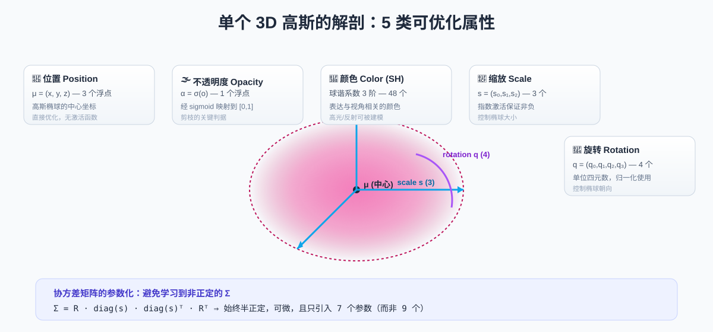
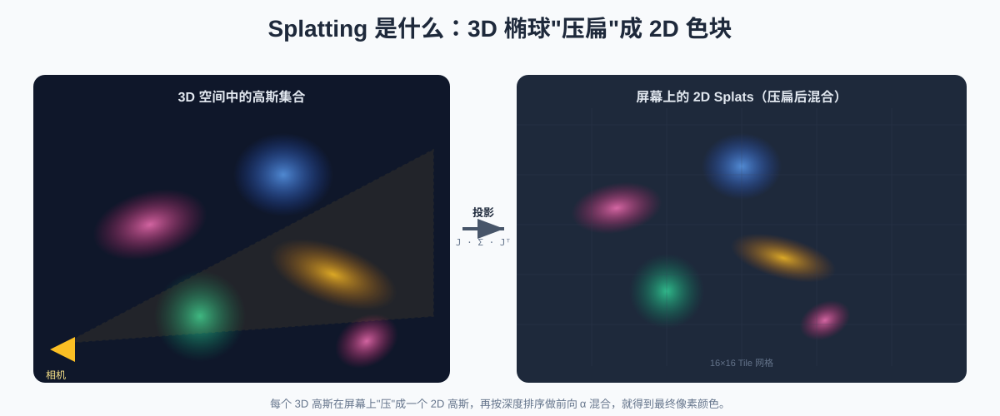
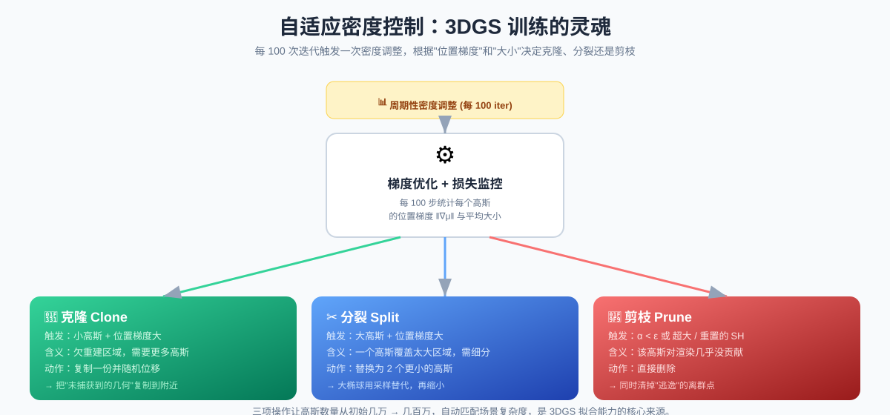
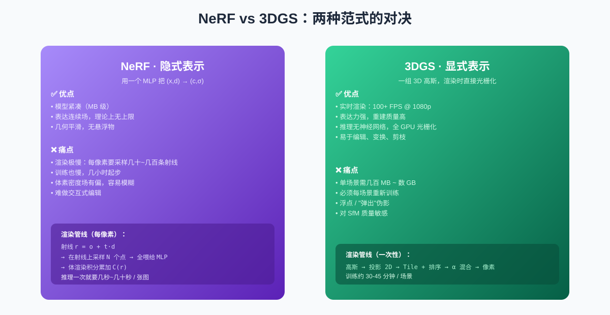
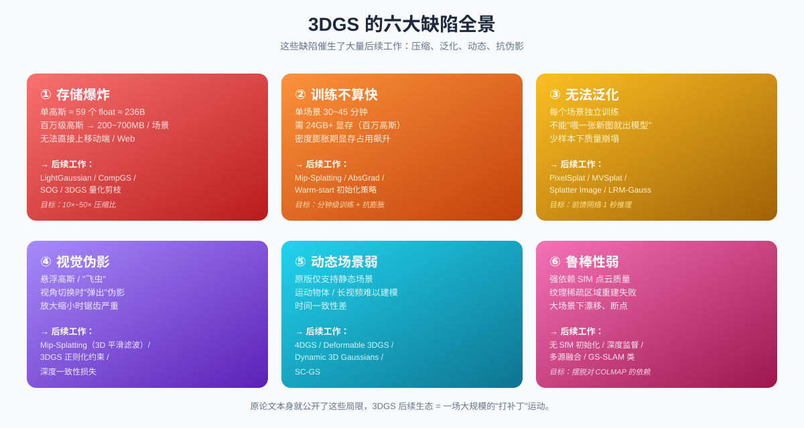

3DGS 原理详解：用百万颗高斯重建世界，及其背后的代价
2023 年 SIGGRAPH 最佳论文 “3D Gaussian Splatting for Real-Time Radiance Field Rendering” 把"神经辐射场"从「一帧几秒」拉到了「实时 100 FPS」，从此新视角合成（Novel View Synthesis）这条赛道被彻底改写。本文从零讲清楚 3DGS 是怎么工作的、为什么这么快，以及它天生的几道"硬伤"。
目录
- 一、为什么需要 3DGS
- 二、整体流程一览
- 三、表示：一个高斯长什么样
- 四、渲染：从 3D 椭球到像素
- 五、训练：自适应密度控制是灵魂
- 六、与 NeRF 的范式对决
- 七、3DGS 的六大缺陷
- 八、总结
一、为什么需要 3DGS
新视角合成的目标是：给一组同一场景的多视角照片，训练出一个能从任意新视角渲染出照片级图像的模型。它的应用横跨 VR/AR、影视特效、数字孪生、自动驾驶仿真、文物数字化等领域。
这条路上有两个关键节点：
- NeRF（2020 ECCV）：用一个 MLP 把
(位置, 方向)映射到(颜色, 密度)，再通过体渲染方程积出像素颜色。质量惊艳，但每渲染一张图要几秒到几十秒——实时化遥不可及。 - 3DGS（2023 SIGGRAPH）：放弃隐式 MLP，改用一组显式 3D 高斯椭球直接表示场景，搭配定制化可微光栅化器，把渲染压到 100+ FPS。
为什么 3DGS 这么关键？因为它证明了：高质量新视角合成不一定要走"体渲染积分"的老路，直接用一组显式基元做 α 混合就够了。 这一思路转变让 3DGS 的生态在两年内爆发式生长。
二、整体流程一览

3DGS 整体流程：从一组照片到实时新视角渲染3DGS 的完整生命周期可以拆成 5 步：
- 输入图像：100~300 张多视角照片，相机姿态已知（通常由 COLMAP 估计）。
- SfM 初始化：用运动恢复结构（SfM）得到稀疏点云，作为高斯椭球的初始位置。
- 构建 3D 高斯集合：每个稀疏点扩展为一个完整的 3D 高斯（位置 + 协方差 + 颜色 + 不透明度）。
- 训练优化：随机梯度下降，配合自适应密度控制（克隆 / 分裂 / 剪枝）调整高斯数量。
- 实时渲染：用专用光栅化器把所有高斯投影、排序、α 混合成像素。
一个关键认知：训练完成后得到的只是一个
.ply文件，推理阶段不需要任何神经网络，整个渲染就是 GPU 上的几何运算 + 颜色混合。
三、表示：一个高斯长什么样

单个 3D 高斯的解剖：5 类可优化属性3DGS 不用体素、不用 MLP，而是把场景表示为百万级个 3D 高斯椭球。每个高斯有 5 类可优化属性：
| 属性 | 含义 | 参数量 | 激活方式 |
|---|---|---|---|
| 位置 μ | 高斯椭球的中心 | 3 | 直接优化 |
| 缩放 s | 椭球的半轴长度 | 3 | 指数激活（保证非负） |
| 旋转 q | 椭球的朝向（四元数） | 4 | 归一化后使用 |
| 不透明度 α | 渲染时的"权重" | 1 | Sigmoid |
| 颜色（SH 系数） | 视角相关颜色 | 48（3 阶 SH） | 球谐求值 |
3.1 协方差的参数化技巧
直接学习一个 3×3 的协方差矩阵 Σ 有两个坑：
- 必须是半正定的，否则不是合法的协方差；
- 9 个参数冗余，优化困难。
3DGS 的做法是把它分解为缩放 s 和旋转 R：
|
|
这样只需要 7 个参数（3 个缩放 + 4 个四元数），且自动半正定，对优化器友好。
3.2 为什么用球谐（SH）而不是直接存 RGB？
真实世界里，同一个点从不同角度看，颜色是不一样的——金属的高光、玻璃的反射、毛发的次表面散射都是典型。直接存一个 RGB 就丢失了这种视角依赖。
3DGS 借鉴 NeRF 的做法，用**球谐函数（Spherical Harmonics, SH）**来表达颜色——给定观察方向 d，通过 SH 基函数求值得到 RGB。原论文用 3 阶 SH（共 48 个系数），足以刻画大多数视角相关的着色效果。
四、渲染：从 3D 椭球到像素
 可微光栅化：3D 高斯如何变成像素
可微光栅化：3D 高斯如何变成像素
3DGS 真正的杀手锏是它的可微光栅化器。它把传统图形学的高性能光栅化流水线，改造成了完全可微的版本。整个过程分 4 步：
4.1 投影：3D 高斯 → 2D 高斯
3D 高斯在世界坐标系下是一个椭球。渲染时，要把它"压"到屏幕空间。
数学上，这个过程是通过投影雅可比矩阵 J完成的：
|
|
其中 W 是世界到相机的变换，J 是投影的局部线性化。Σ’ 就是 2D 屏幕空间下的协方差矩阵——一个 2×2 的椭圆。

Splatting 是什么：3D 椭球"压扁"成 2D 色块这一步是 3DGS 与传统体渲染最大的不同：它不是采样射线，而是直接把所有高斯"喷"（splat）到屏幕上。
4.2 划分 Tile
屏幕被切成 16×16 的网格。每个 2D 高斯根据其覆盖范围，被分配到一个或多个 Tile。同时做两件事剔除：
- 视锥剔除：完全在视锥外的高斯直接丢弃；
- 远处裁剪：太远的高斯直接剔除（避免无效贡献）。
4.3 深度排序
α 混合必须从前到后进行（否则会有错误的遮挡）。3DGS 在每个 Tile 内对高斯按视点距离排序——这里用了一个 GPU 友好的单 pass 基数排序，是速度的关键之一。
4.4 Alpha 混合
每个像素的颜色由所有覆盖它的高斯按顺序累积：
|
|
其中：
cᵢ：第 i 个高斯在该视角下的颜色（由 SH 求值）；αᵢ：不透明度 × 该像素在 2D 高斯分布下的取值；Tᵢ = ∏ⱼ<ᵢ (1 − αⱼ)：透射率，表示"剩余多少光"。
优化技巧：当 Tᵢ 趋近 0 时，说明后续高斯被完全遮挡，可以直接 break 跳过——大幅节省渲染开销。
4.5 为什么这套渲染管线这么快？
- 不走神经网络前向，没有 MLP 计算；
- Tile 并行：一个 GPU 线程块处理一个 Tile，并行度极高；
- 提前终止：T→0 时跳过被遮挡高斯。
这就是为什么 3DGS 能在 1080p 下跑到 100+ FPS，而 NeRF 同尺寸场景只能跑几秒一张。
五、训练：自适应密度控制是灵魂

自适应密度控制：3DGS 训练的灵魂只靠 SGD 优化高斯属性是不够的——SfM 给出的初始点云非常稀疏（几万个点），无法表达复杂场景。3DGS 的核心创新之一是自适应密度控制（Adaptive Density Control）：每 100 次迭代触发一次密度调整，根据每个高斯的"位置梯度"和"大小"决定下一步动作。
5.1 三种密度操作
| 操作 | 触发条件 | 物理含义 | 具体动作 |
|---|---|---|---|
| 克隆 Clone | 小高斯 + 位置梯度大 | 欠重建区域，需要更多高斯 | 复制一份并随机位移 |
| 分裂 Split | 大高斯 + 位置梯度大 | 一个高斯覆盖太大，需细分 | 替换为 2 个更小的高斯 |
| 剪枝 Prune | α < ε / 过大 / SH 重置 | 该高斯对渲染几乎没贡献 | 直接删除 |
位置梯度大意味着：这个高斯"想要"往某个方向移动，说明当前几何表示不到位。3DGS 用这个信号判断哪些区域需要更精细的几何。
5.2 训练损失
3DGS 用一个简单的组合损失：
|
|
L1：像素级绝对误差，保证整体颜色准确；D-SSIM：结构相似度的 1-SSIM 版本，保证结构和感知质量；λ = 0.2在大多数场景下表现良好。
5.3 训练流程
- 用 SfM 稀疏点云初始化每个高斯的位置；
- 高斯大小、旋转、颜色初始值用启发式设定（如平均距离）；
- 每 100 步触发一次密度控制；
- 训练 30000 步左右收敛，单场景约 30~45 分钟。
这套机制的妙处在于：初始只有几万个高斯，最终能膨胀到几百万个——数量自动匹配场景复杂度，比固定分辨率网格灵活得多。
六、与 NeRF 的范式对决

NeRF vs 3DGS：两种范式的对决3DGS 与 NeRF 经常被放在一起对比，因为它们解决的是同一类问题。这里做一个全面的对照：
| 维度 | NeRF | 3DGS |
|---|---|---|
| 表示方式 | 隐式（MLP） | 显式（高斯集合） |
| 模型大小 | 紧凑（MB 级） | 庞大（数百 MB ~ GB） |
| 渲染速度 | 慢（秒级 / 张） | 快（100+ FPS） |
| 训练时间 | 几小时 | 30~45 分钟 |
| 几何平滑性 | 平滑，无悬浮 | 容易产生悬浮物 |
| 可编辑性 | 困难 | 直接操作高斯即可 |
| 视角相关性 | 强（依赖方向 d） | 强（依赖 SH） |
| 像素独立计算 | 是（射线采样） | 否（Tile 共享排序） |
核心差异在渲染范式：NeRF 走"逐像素射线采样 + 体渲染积分"，每个像素都要做几十~几百次 MLP 前向；3DGS 走"Tile + α 混合"，所有高斯一次性光栅化到屏幕。
3DGS 之所以能赢下实时性，本质上是把"每像素都要重复做的昂贵计算"换成了"一次性光栅化的廉价操作"。
七、3DGS 的六大缺陷

3DGS 的六大缺陷全景3DGS 并不完美。事实上，原论文本身就公开承认了这些局限，而过去两年大量后续工作都是围绕它们做"打补丁"。下面详细展开六大缺陷。
7.1 存储爆炸
这是最显眼的问题。一个 3D 高斯需要存储：
- 位置 3 + 缩放 3 + 旋转 4 + 不透明度 1 + SH(3 阶) 48 = 59 个 float ≈ 236 字节
一个无边界场景通常有 百万级高斯，单场景动辄 200~700 MB。这意味着：
- 移动端 / Web 端难以部署：浏览器加载一个 500MB 的
.ply不现实； - 存储成本飙升：一个数字孪生项目要存数百个场景，就是几十~几百 GB；
- 传输带宽吃紧：流式渲染 4K 场景对网络要求极高。
这也是我之前那个 3DGS 压缩分析平台 的核心动机——压缩几乎是 3DGS 落地的必经之路。
代表后续工作：LightGaussian（剪枝 + SH 蒸馏 + VQ 量化）、CompGS、SOG、EulerGS、3DGS 量化剪枝等，目标压缩比 10×~50×。
7.2 训练不算快
虽然 3DGS 训练比 NeRF 快很多，但 30~45 分钟 / 场景在工业场景仍偏慢。更严重的问题是：
- 显存占用大：训练时百万高斯需要 24GB+ 显存；
- 密度膨胀期显存飙升：分裂操作会让高斯数量在某个阶段爆炸式增长；
- 难以分钟级训练：交互式应用（如实时重建）几乎不可行。
代表后续工作：Mip-Splatting（抗锯齿）、AbsGrad（绝对梯度策略，加速收敛）、Warm-start 初始化等。
7.3 无法泛化
3DGS 必须每场景独立训练，不能"喂一张新图就出模型"。少样本（few-shot）场景下，高斯密度控制很容易崩塌——没有足够的视角监督，高斯会胡乱增长。
这与生俱来的限制让 3DGS 难以应用在：
- AR 实时建模（用户拍几张照就出模型）；
- 机器人感知（环境快速重建）；
- 大规模城市采集（场景太多，逐个训练不现实）。
代表后续工作：PixelSplat、MVSplat、Splatter Image、LRM-Gauss 等——这些工作用 transformer 前馈网络直接从图像预测高斯参数，1 秒推理出模型，但质量仍不及原始 3DGS。
7.4 视觉伪影
3DGS 的渲染常见几类伪影：
- 悬浮高斯（Floaters / “飞虫”）：训练过程中没有被剪掉的离群高斯，会在视角移动时出现在场景中"飘"的小色块；
- “弹出"伪影（Popping）：视角切换时某些高斯突然出现/消失，因为密度控制在不同视角下表现不一致；
- 缩放锯齿：放大场景时，2D 高斯投影的离散性导致锯齿严重；
- 远距离模糊：远处高斯采样不足，渲染时模糊。
这些问题大多源于一个根本原因：3DGS 用"离散点集 + 各向异性高斯"近似连续场景，在高频细节和反走样处理上天生不如体渲染。
代表后续工作：Mip-Splatting（3D 平滑滤波 + 屏幕空间膨胀，是当前抗锯齿的事实标准）、3DGS 正则化、深度一致性损失等。
7.5 动态场景弱
原版 3DGS 只支持静态场景。一旦场景中有运动物体，或者要做长视频重建，问题就出现了：
- 高斯没有时间维度，无法表达运动；
- 直接逐帧训练会导致帧间不一致（“闪烁”）；
- 长视频的存储和计算成本爆炸。
代表后续工作：4DGS、Deformable 3DGS（用形变场建模时间）、Dynamic 3D Gaussians、SC-GS（用控制网格驱动高斯运动）等。
7.6 鲁棒性弱
3DGS 强依赖 SfM 点云质量：
- 纹理稀疏区域（如白墙、天空）SfM 给不出点，3DGS 重建直接失败；
- 反光、透明物体 SfM 误差大，3DGS 跟着出错；
- 大场景下 SfM 漂移，导致重建几何偏差。
此外，3DGS 对初始化超参数也比较敏感——初始高斯大小、密度控制阈值等都需要场景相关调参。
代表后续工作：无 SfM 初始化（如随机点云、均匀采样）、深度监督（用 monodepth 先验）、GS-SLAM 类方法（在线增量重建）等。
八、总结
8.1 3DGS 一句话总结
3DGS = 显式高斯表示 + 可微光栅化 + 自适应密度控制。
它把"高质量新视角合成"从"实验室 demo"推向了"实时交互”，是过去两年计算机视觉最有影响力的工作之一。
8.2 它的核心贡献
- 表示：用百万级 3D 高斯显式建模场景，可微可优化；
- 渲染：定制可微光栅化器，把神经渲染速度提升两个数量级；
- 训练：自适应密度控制（克隆 / 分裂 / 剪枝）让表示自适应场景复杂度。
8.3 它的根本代价
| 速度 | → | 牺牲了存储（数百 MB / 场景） |
|---|---|---|
| 显式性 | → | 牺牲了几何平滑性（悬浮伪影） |
| 自适应 | → | 牺牲了训练稳定性（对初始化敏感） |
| 实时性 | → | 牺牲了泛化能力（每场景重训） |
每一次"快"的背后，都对应着一个"慢"的代价——这正是 3DGS 生态持续生长的动力。理解了这些缺陷，你就能更准确地选择何时用 3DGS、何时该走 NeRF 路线、何时该用混合方案。
参考资料
- 原论文：3D Gaussian Splatting for Real-Time Radiance Field Rendering (SIGGRAPH 2023)
- 项目主页：https://github.com/graphdeco-inria/gaussian-splatting
- Mip-Splatting：https://github.com/nerfstudio-project/gsplat
- LightGaussian：https://lightgaussian.github.io/
本文是 3DGS 压缩分析平台开发日志 的姊妹篇——前者讲平台工程，本文讲清背后的算法原理。两者结合阅读，效果更佳。